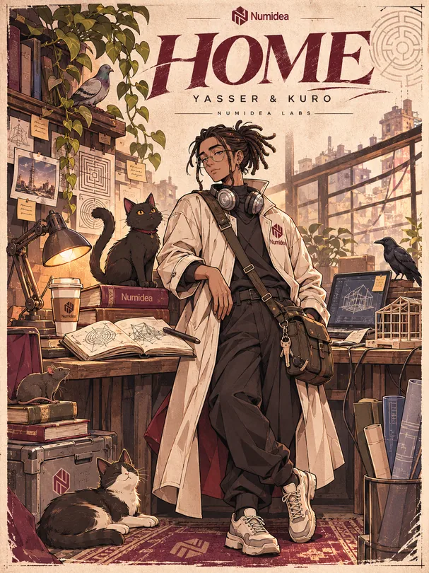
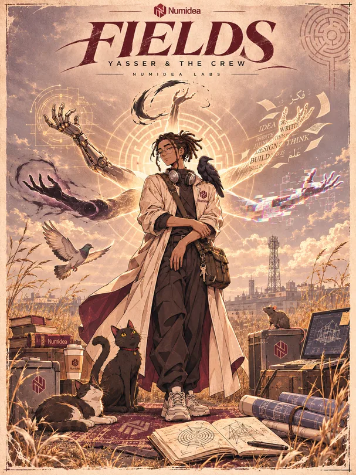
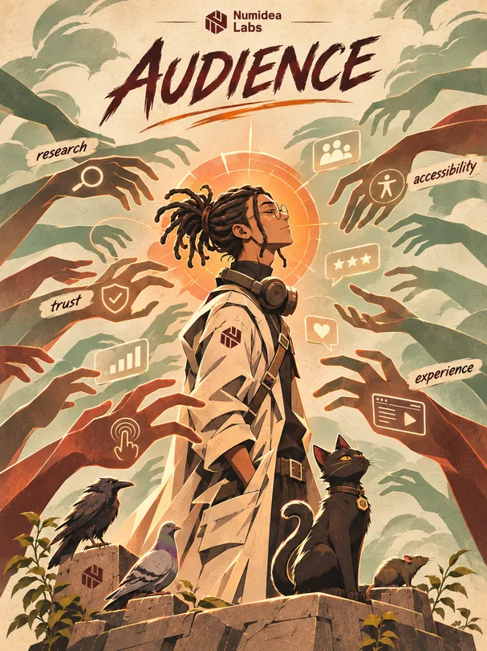
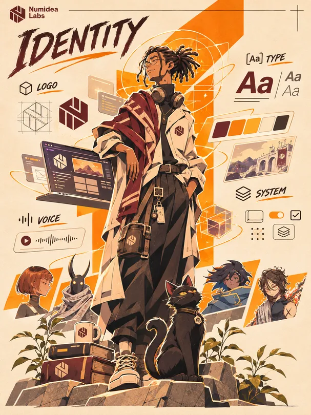
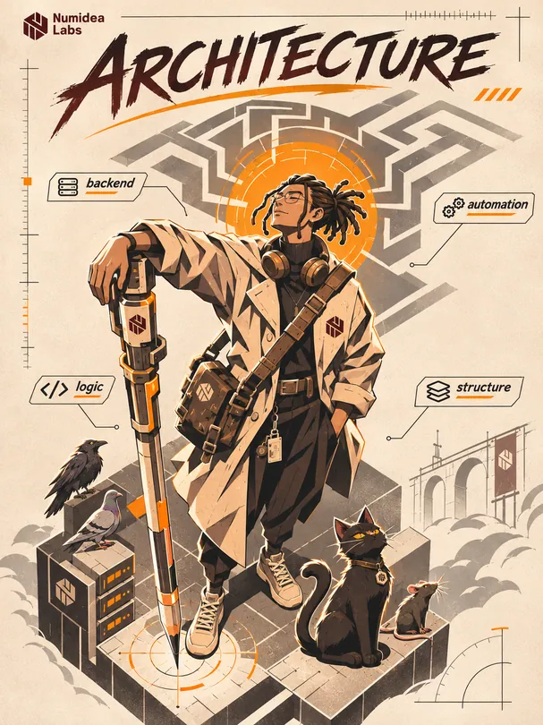
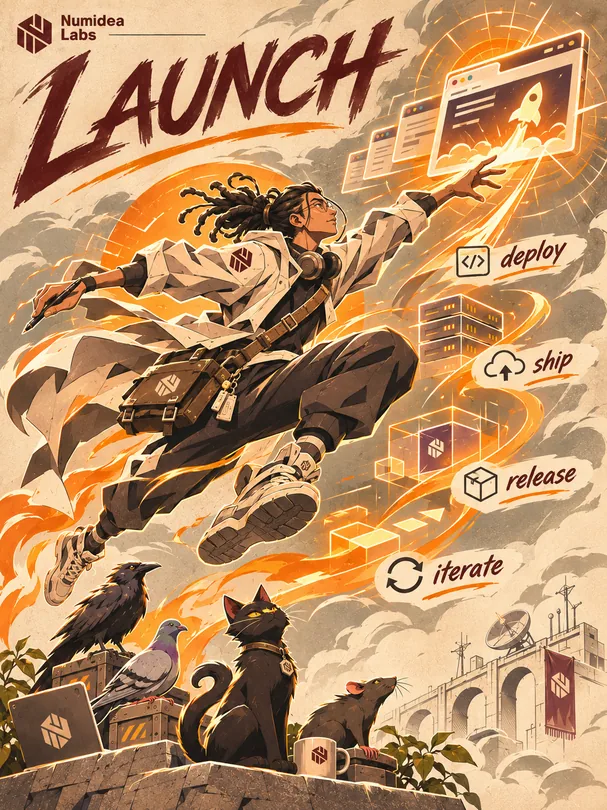
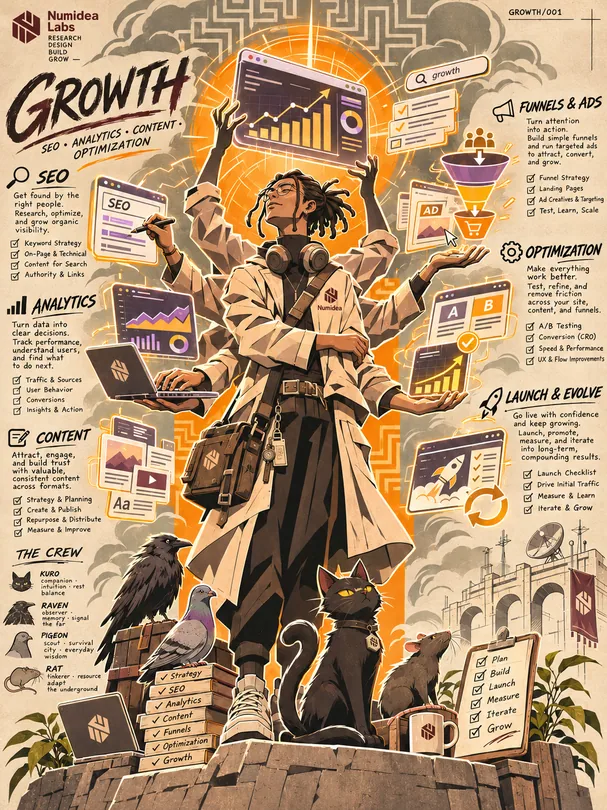
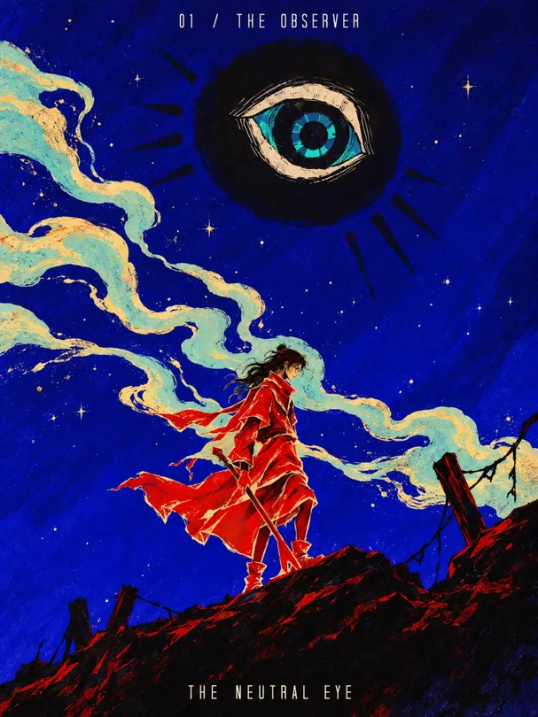
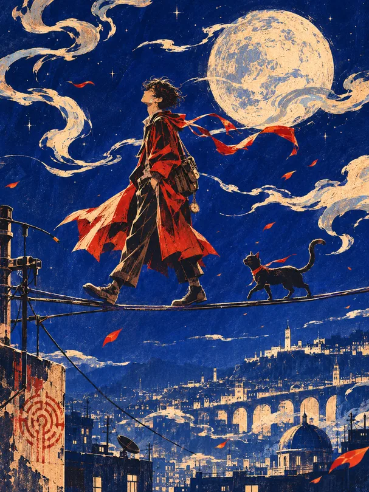
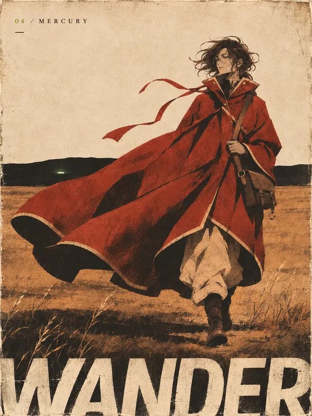

/ LE CAS DE LA LANTERNE · DU BRIEF AU LANCEMENT
Le cours du soir.
Un atlas de terrain
La Librairie Lanterne a un cours du soir à remplir. Suivez Yasser et l’équipe, d’une enveloppe écrite à la main jusqu’à une réservation qui marche.
Chez la Lanterne · librairie inventée
Ouvrir l’atlas


Choisir un quartier
Les quartiers
0 quartier fait sur 8chemin de traverse : 0 / 2


Le dossier · Acte I · 1 / 10
Chez nous
L’atelier d’Argent · avec Yasser
Une enveloppe de la Librairie Lanterne arrive à l’atelier d’Argent. La libraire ouvre un cours du soir de gravure et en a assez de compter les places dans ses messages. Kūro s’installe sur le seul papier qui compte : la date du premier cours.
La règle
Un brief de projet peut commencer par un problème, une personne et un résultat.
Faire l’exercice de terrain
L’exercice de terrain
Écrire un brief en trois parties
Ouvert
Reliez la tâche du visiteur, sa difficulté et le résultat qu’on veut observer.
Sans JavaScript, l’exercice reste au repos ; le dossier et la note du journal se lisent quand même.
Une enveloppe de la Lanterne · Brief validé : le visiteur voit les détails de la séance et réserve une place sans envoyer de message.



Le dossier · Acte I · 2 / 10
Le terrain
Les routes d’enquête · avec Techno Pigeon
Techno Pigeon porte le brief à la Lanterne et regarde deux personnes essayer de s’inscrire au cours du soir. Leurs chemins diffèrent. Toutes deux s’arrêtent avant de choisir une place.
La règle
L’enquête change une intuition en observation qu’on peut tester.

L’exercice de terrain
Carnet de terrain
Ouvert
Regardez deux clients avant de décider ce qui doit bouger.
Sans JavaScript, l’exercice reste au repos ; le dossier et la note du journal se lisent quand même.
Deux chemins vers le même étal · Constat de terrain : mettre la date et le prix du cours à côté du bouton de réservation.

Le dossier · Acte I · 3 / 10
Le public
Le quartier qui écoute · avec Kūro
Grâce aux notes de Techno Pigeon, la date et le prix passent au-dessus du bouton de réservation. Dans le quartier qui écoute, Kūro suit une visiteuse qui essaie le nouveau formulaire sans souris.
La règle
Un parcours marche quand les personnes qui en ont besoin peuvent aller au bout.
Faire l’exercice de terrain
L’exercice de terrain
Le parcours au clavier
Ouvert
Suivez le formulaire de réservation champ par champ et voyez pourquoi un focus visible compte.
Sans JavaScript, l’exercice reste au repos ; le dossier et la note du journal se lisent quand même.
Le chemin à travers le formulaire · Contrôle d’accès : un focus visible suit l’ordre de la réservation dans tout le formulaire.

Le dossier · Acte II · 4 / 10
L’identité
La fonderie · avec Yasser
Yasser dessine pour la Lanterne une marque en forme de livre plié. Elle doit rester la librairie sur la vitrine, sur la page du cours, et dans le minuscule onglet où le visiteur revient après avoir comparé les dates.
La règle
Une identité sert partout quand elle a une famille de marques cohérente.
Faire l’exercice de terrain
L’exercice de terrain
Le test du favicon
Ouvert
Réduisez deux versions d’une marque de livre fictive. Comparez ce qu’on reconnaît encore.
Sans JavaScript, l’exercice reste au repos ; le dossier et la note du journal se lisent quand même.
Une marque pour la boutique et pour l’onglet · Preuve de design : la silhouette du livre plié tient à la taille d’un favicon.

Le dossier · Acte II · 5 / 10
L’architecture
Le quartier des systèmes · avec Ratman
Ratman suit le fil de cuivre du formulaire jusqu’au relais. La page est prête à prendre des réservations. Le relais doit encore décider qui aura la dernière place.
La règle
Quand la ressource est limitée, le serveur tranche avant de confirmer une réservation.
Faire l’exercice de terrain
L’exercice de terrain
La dernière place
Ouvert
Faites passer les deux mêmes demandes par deux règles de capacité. Voyez ce que reçoit chaque visiteur.
Sans JavaScript, l’exercice reste au repos ; le dossier et la note du journal se lisent quand même.
Une place, une confirmation · Règle du relais : vérifier et réserver la dernière place en une seule opération protégée, côté serveur.


Le dossier · Acte II · 6 / 10
Le lancement
La cour des expéditions · avec Techno Pigeon
Techno Pigeon porte le nouveau site de la Lanterne à la cour des expéditions. Le relais a passé son test de capacité. Reste un essai en préproduction, qui doit aller jusqu’à la confirmation.
La règle
On teste une mise en ligne, et on garde un chemin de retour connu.
L’exercice de terrain
La répétition
Ouvert
Faites une réservation en préproduction, puis décidez quoi faire de la version qui échoue.
Sans JavaScript, l’exercice reste au repos ; le dossier et la note du journal se lisent quand même.
La répétition dans la cour · Décision de mise en ligne : la version qui marche reste en ligne tant que la confirmation ne passe pas en préproduction.


Le dossier · Acte II · 7 / 10
La croissance
Les jardins du signal · avec Raven
La Lanterne ouvre la page de réservation une fois la confirmation réparée. Raven regarde 100 visites fictives. Seules 40 personnes arrivent au formulaire, et les notes de terrain de Techno Pigeon reviennent au premier plan.
La règle
Choisissez un signal qui reflète la tâche que vous améliorez.
Faire l’exercice de terrain
L’exercice de terrain
Trouver la fuite
Ouvert
Examinez un parcours de réservation fictif. Quelle étape perd le plus de monde ?
Sans JavaScript, l’exercice reste au repos ; le dossier et la note du journal se lisent quand même.
Les soixante qui manquent · Piste de croissance : 60 visites sur 100 se sont arrêtées avant le formulaire. Tester si la date, le prix et le bouton de réservation sont clairs.


Le dossier · Acte II · 8 / 10
L’observateur
L’observatoire des preuves · avec Raven
Après le cours, une participante demande un reçu que quelqu’un d’autre puisse vérifier. Raven ouvre une fenêtre dans l’Observatoire. La liste des participants reste dans le tiroir fermé à clé de la Lanterne.
La règle
Séparez la vérification publique des fiches clients privées. Cette simulation utilise des reçus fictifs.
L’exercice de terrain
Le banc des preuves
Ouvert
Choisissez les champs que l’archive publique fictive peut voir. Lancez une recherche de reçu avec vos choix.
Sans JavaScript, l’exercice reste au repos ; le dossier et la note du journal se lisent quand même.
Une fenêtre et un tiroir fermé à clé · Limite de la preuve : publier seulement une référence de reçu opaque. Les détails des participants restent privés.


Le dossier · MERCURY · 9 / 10
Le fil sous la lune
MERCURY, la traversée · avec Kūro
Kūro suit Raven jusque dans MERCURY. La traversée est une répétition du nouvel écran de reçu de la Lanterne. Chaque point d’appui offre une action et un résultat visible.
La règle
Un parcours compliqué devient plus simple quand le prochain pas sûr est clair.
L’exercice de terrain
La traversée de Kūro
Ouvert
Faites avancer Kūro en lui donnant un prochain pas clair. Il n’y a pas de chrono.
Sans JavaScript, l’exercice reste au repos ; le dossier et la note du journal se lisent quand même.
Le chemin court pour traverser · Règle d’orientation : une action claire, suivie d’un résultat que la personne voit.

Le dossier · MERCURY · 10 / 10
Le champ de cendres
MERCURY, le retour · avec Yasser
Au-delà du fil, le signal de l’Observatoire se perd. Yasser revient par le champ de cendres avec une règle pour la Lanterne : une recherche de preuve qui échoue ne doit jamais fermer le guichet des réservations.
La règle
Une connexion perdue doit laisser intact ce que la personne peut encore faire.
L’exercice de terrain
L’exercice de panne
Ouvert
Débranchez un service et vérifiez ce qui marche encore.
Sans JavaScript, l’exercice reste au repos ; le dossier et la note du journal se lisent quand même.
La lumière qui reste allumée · Règle de panne : garder les réservations ouvertes et dire quand la vérification des reçus est indisponible.
Chez la Lanterne · librairie inventée ·
Une enveloppe de la Lanterne
La Lanterne · librairie inventée
Le journal de bord
0 / 8 note · chemin de traverse 0 / 2
Faites un quartier jusqu’au bout, la situation puis l’exercice, pour inscrire la décision de l’équipe au journal.
Acte I · Trouver le chemin
- Une enveloppe de la Lanterne
Au départ : un premier cours, des places comptées, et des réservations noyées dans les messages.
Brief validé : le visiteur voit les détails de la séance et réserve une place sans envoyer de message.
- Deux chemins vers le même étal
Porter le brief jusqu’à deux visites observées.
Constat de terrain : mettre la date et le prix du cours à côté du bouton de réservation.
- Le chemin à travers le formulaire
Prendre la nouvelle mise en page et la tester du premier champ jusqu’à « Réserver ».
Contrôle d’accès : un focus visible suit l’ordre de la réservation dans tout le formulaire.
Acte II · Construire et livrer
- Une marque pour la boutique et pour l’onglet
Porter la silhouette reconnaissable de la librairie jusque dans la réservation.
Preuve de design : la silhouette du livre plié tient à la taille d’un favicon.
- Une place, une confirmation
Relier le formulaire de réservation à son relais de capacité.
Règle du relais : vérifier et réserver la dernière place en une seule opération protégée, côté serveur.
- La répétition dans la cour
Emmener le relais qui marche en préproduction et tester la réservation complète.
Décision de mise en ligne : la version qui marche reste en ligne tant que la confirmation ne passe pas en préproduction.
- Les soixante qui manquent
Après la réparation de la confirmation, comparer les étapes de la réservation en ligne.
Piste de croissance : 60 visites sur 100 se sont arrêtées avant le formulaire. Tester si la date, le prix et le bouton de réservation sont clairs.
- Une fenêtre et un tiroir fermé à clé
Créer, après le cours, une recherche de reçu facultative.
Limite de la preuve : publier seulement une référence de reçu opaque. Les détails des participants restent privés.
Chemin de traverse · MERCURY
- Le chemin court pour traverser
Répéter l’écran de reçu avec Kūro, un pas utile à la fois.
Règle d’orientation : une action claire, suivie d’un résultat que la personne voit.
- La lumière qui reste allumée
Couper la liaison avec l’Observatoire et voir si la Lanterne prend encore des réservations.
Règle de panne : garder les réservations ouvertes et dire quand la vérification des reçus est indisponible.
Le sac · inventaire
Le sac
0 souvenir sur 10
Chaque quartier fait ajoute un souvenir au sac. Vos progrès restent dans ce navigateur, s’il les garde ; rien ne part d’ici.
Acte I · Trouver le chemin
- Chez nousLe briefSouvenir pas encore gagné
- Le terrainLes notes de terrainSouvenir pas encore gagné
- Le publicL’affiche « AUDIENCE »Souvenir pas encore gagné
Acte II · Construire et livrer
- L’identitéL’affiche « IDENTITY »Souvenir pas encore gagné
- L’architectureL’affiche « ARCHITECTURE »Souvenir pas encore gagné
- Le lancementLe tampon d’expéditionSouvenir pas encore gagné
- La croissanceL’affiche « GROWTH »Souvenir pas encore gagné
- L’observateurL’insigne de l’observateurSouvenir pas encore gagné
Chemin de traverse · MERCURY
- Le fil sous la luneLa traverséeSouvenir pas encore gagné
- Le champ de cendresL’insigne du retourSouvenir pas encore gagné